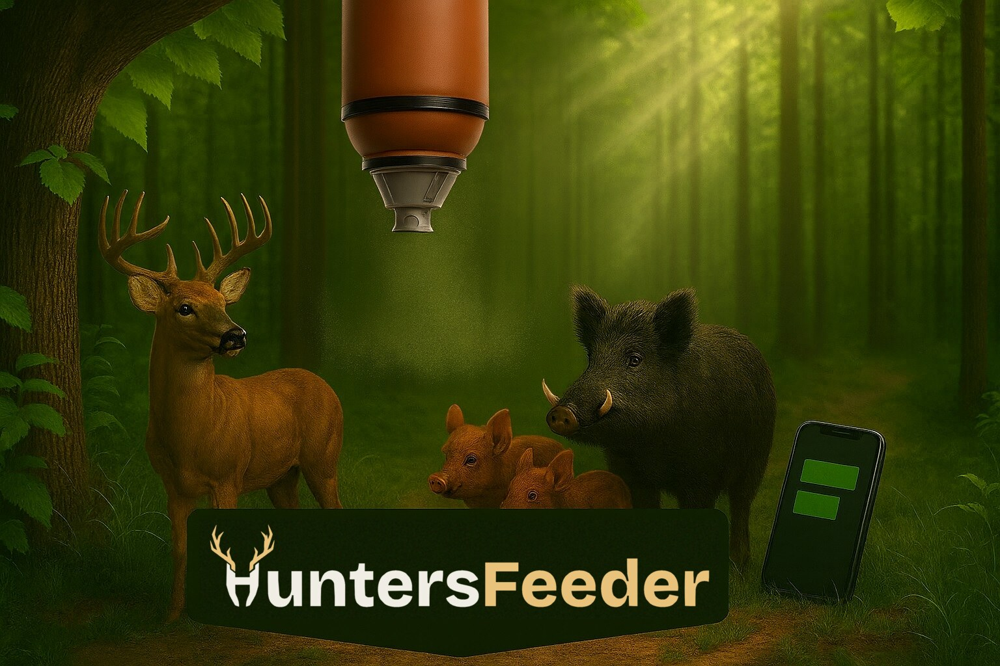

HuntersFeeder — pametni krmilnik za divjad
Krmišče, ki skrbi zase.
Ti samo loviš.
Samodejno krmljenje po urniku in SMS-nadzor od koderkoli. Brez interneta, brez aplikacij, brez naročnine — HuntersFeeder ti javi, ko zmanjka hrane ali baterije.
1+ mesec
delovanja na eno polnitev
SMS
obveščanje in upravljanje